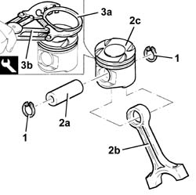
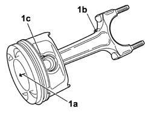
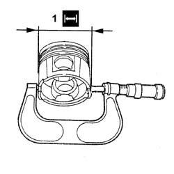
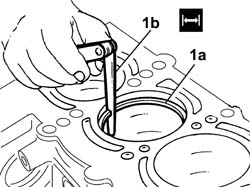

1028H60 PISTON, PIN SET - REPLACE
- Path
- Procedures > 10 ENGINE > 1028 PISTONS AND CONNECTING RODS > 1028H PISTONS AND CONNECTING RODS > 1028H60 PISTON, PIN SET - REPLACE
- Kind
- repair procedure (removal / refitting; the operation number is the code)
- Applies to
- engines: 3.0 24V V6, 2.0 16V JTD; all production periods
- Interactive page
- https://sloeber94.github.io/elrnDB-fUlss/en/#/179006925
Applies to: engines: 3.0 24V V6; all production periods
Dismantling
1. Remove the piston rings.
2. Release the pins (2a) and separate the connecting rods (2b) from the pistons (2c).
3. Remove the piston rings (3a) from the pistons using the tool (3b).
Description | Code | Function | |
|---|---|---|---|
Extractor/Fitting tool | 1.860.183.000 | Removing flexible bands |

Applies to: engines: 3.0 24V V6; all production periods
Reassembly
- Check the alignment of the connecting rods using suitable equipment; if it is not correct, replace the connecting rod.
- Check that the weight difference between the connecting rods, complete with half-bearings, caps and bolts corresponds to the recommended figures.
- The arrows in the diagram illustrate where material can be removed from the to equalize the weight.
Difference in weight between connecting rods (g.) | Validity |
± | - |
- Check that the weight difference between the pistons corresponds to the recommended figures.
Difference in weight between connecting rods (g.) | Validity |
± | - |
- Fit the circlips on the pistons using the tool.
1. Join the connecting rod to the piston so that the arrow (1a) stamped on the piston crown is facing the same way as illustrated in the diagram in relation to the lubrication port (1b) in the side of the connecting rod, also the bevel (1c) on the gudgeon pin should be facing to the lubrication port (1b).
- Fit the pin and secure it using the circlips.

Applies to: engines: 2.0 16V JTD; all production periods
Applies to: engines: 2.0 16V JTD; all production periods
- Clean any carbon residues from the piston crown.
- Check that the weight difference between the pistons corresponds to the recommended figures.
- Slight machining in the areas for equalizing the weight is permitted.
Subject | Value | |
|---|---|---|
Weight difference between pistons | g | |
DOP01 | ± - |
1. Check that the outer diameter of the pistons corresponds to the recommended figures; if not, replace the piston complete with piston rings and gudgeon pin.
Subject | Value | |
|---|---|---|
Outer diameter | mm | |
from the lower edge of the piston skirt | - ÷ - | |
DOP21 | - ÷ - |

Applies to: engines: 2.0 16V JTD; all production periods
- Check that the pin seat bore diameter is within specified values, otherwise replace the pin with an oversized pin.
Subject | Value | |
|---|---|---|
Gudgeon pin housing diameter | mm | |
- | - ÷ - |
Subject | Value | |
|---|---|---|
Gudgeon pin oversize | mm | |
- | - |
- Check that the outer diameter of the piston pins corresponds to the recommended figures; if not, replace the worn components.
Subject | Value | |
|---|---|---|
Gudgeon pin outer diameter | mm | |
- | - ÷ - |
- Use a micrometer gauge to measure the thickness of the piston sealing rings.
Subject | Value | |
|---|---|---|
1st piston ring thickness | mm | |
- | - ÷ - |
Subject | Value | |
|---|---|---|
2nd piston ring thickness | mm | |
- | - ÷ - |
Subject | Value | |
|---|---|---|
Oil scraper ring size | mm | |
- | - ÷ - |
Subject | Value | |
|---|---|---|
Piston ring oversize | mm | |
- | - |
1. Fit the sealing rings (1a) in the cylinder liner and use a feeler gauge (1b) to check the gap between the seal ends is within specified limits. Otherwise replace the sealing rings.
Subject | Value | |
|---|---|---|
1st piston ring gap | mm | |
DOP39 | - ÷ - |
Subject | Value | |
|---|---|---|
2nd piston ring gap | mm | |
DOP39 | - ÷ - |
Subject | Value | |
|---|---|---|
Oil scraper ring gap | mm | |
DOP39 | - ÷ - |

Applies to: engines: 2.0 16V JTD; all production periods
- Check the alignment of the connecting rods using suitable equipment; if it is not correct, replace the connecting rod.
- Check that the difference in weight between the connecting rods, complete with half-bearings, caps and bolts is within the recommended values.
- Slight machining in the areas for equalizing the weight is permitted.
Subject | Value | |
|---|---|---|
Weight difference between connecting rods | g | |
DOP01 | - ± - |
- Check that the diameter of the big end and the small end are within the recommended values.
Subject | Value | |
|---|---|---|
Big end diameter | mm | |
DOP20 | - ÷ - |
Subject | Value | |
|---|---|---|
Small end diameter | mm | |
- | - ÷ - |
- Complete with
Topics linked from this page (1)
Topics that link to this page (2)
- 1004E20 ENGINE - DISMANTLE AND REASSEMBLE FOLLOWING OPERATION 1004E10 - WASH AND CHECK DISMANTLED PARTS - REFIT CYLINDER HEAD AND OIL SUMP - DOES NOT INCLUDE REPAIRS TO CYLINDER HEAD AND AUXILIARY UNIT
- 1024A10 CRANK SHAFT - R + R WITH ENGINE REMOVED - CHECK MAIN AND CONNECTING ROD BEARINGAND REPLACE IF NECESSARY